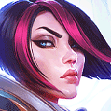

League of Legends is a team-based strategy game where two teams of five powerful champions face off to destroy the other’s base. Choose from over 140 champions to make epic plays, secure kills, and take down towers as you battle your way to victory.
TopLane
Most Top Lane Champions are Tanky Melee Bruiser or AP Carry with lots of CC or Utility
MidLane
For the most Part there are two different types of Mid Lane Champions: the first is The Casters, these most the time will be AP Carrys. While the other is Assassins, these tend to be AD but can sometimes be AP as well. Mid Lane role champions are in the best position to control the outcome of the game, due to the location of the lane being in middle of the map. This gives you more opportunity to assist other lanes including the Jungle.
BotLane
ADCarry is one of the most valued roles in the game, so much so that there is another Role that is dedicated to supporting the ADC threw lane phase. ADC Champions must (CS)Creep Score/Farm Gold to be effective in the later parts of the game, so it very important that your AD Carry has a good lane phase threw the entirety of the game.
Supports are the back bone to any strong team composition, whether its Starting or Stopping a Team Fight to Catching or Peeling Champions. If you support champion pick isn’t what your ADC needs in bot lane, this will almost always spell disaster for the lane phase and in turn the late game Team Fights.
Jungler
The Jungle Role has many choices in terms of champion picks, since you can use Tanks, Bruisers, AP Carrys, Assassins and even ADC Jungle Champion picks.
| Exemple of champion by lane : | ||||||
|---|---|---|---|---|---|---|
| TopLane : | Darius | Mordekaiser |  | Fiora | ||
| MidLane : | Leblanc | Kassadin | Zed | |||
| BotLane ADC | Caitlyn | Ashe | Corki | |||
| BotLane Support | Lulu |  |
Leona | Soraka | ||
| Jungler | Mr Yi | Lee Sin | Elise | |||